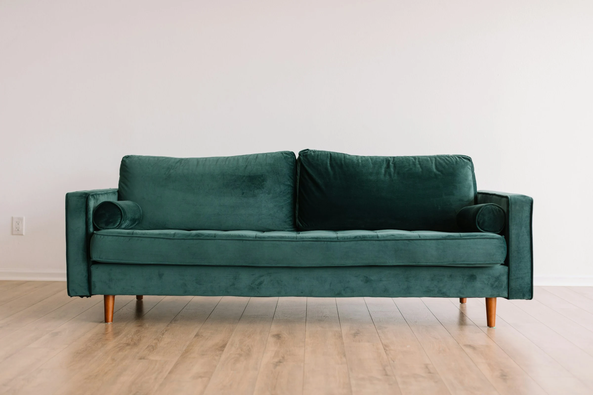

Кухни
Проектируем кухню под ваш ритм жизни: планировку, хранение, материалы и технику. Подбираем коллекции РИМИ в единой концепции интерьера.
Подробнее: КухниАрхитектура, дизайн интерьеров, проектирование кухонь и мебельные решения от галереи MARI LIMAR.
Проектируем кухню под ваш ритм жизни: планировку, хранение, материалы и технику. Подбираем коллекции РИМИ в единой концепции интерьера.
Подробнее: Кухни
Продумываем пространство от сценариев жизни до планировки и пропорций. Объединяем функциональность, естественный свет и архитектурную идею.
Подробнее: Архитектура
Создаём цельный интерьер через материалы, цвет, освещение и мебель. Согласовываем детали, которые формируют характер и атмосферу пространства.
Подробнее: Дизайн
Оцениваем качество мебели и разбираем выявленные недостатки. По результатам профессиональной экспертизы готовим письменное заключение.
Подробнее: Экспертиза мебелиMARI LIMAR / 01ЛунаСовременная коллекция MARI LIMAR / 02ФерратаСовременная коллекция
MARI LIMAR / 02ФерратаСовременная коллекция MARI LIMAR / 03ПрогмаСовременная коллекция
MARI LIMAR / 03ПрогмаСовременная коллекция MARI LIMAR / 04МонтичелиКлассическая коллекция
MARI LIMAR / 04МонтичелиКлассическая коллекция MARI LIMAR / 05ЛанжеКлассическая коллекция
MARI LIMAR / 05ЛанжеКлассическая коллекцияМодели мебельного партнёра РИМИ. Больше коллекций и вариантов — на странице «Кухни».
О пространстве больше, чем о вещах
MARI LIMAR / эстетика как образ жизни
Объединяем эстетику пространства, функциональность и внимание к материалам. От планировки кухни до цельного интерьерного решения.
Обсудить задачуЭргономика, сценарии жизни и точный баланс формы и функции.
Сочетания поверхностей, оттенков и деталей, которые формируют характер пространства.
Кухни, мебель, архитектура и интерьер рассматриваются как взаимосвязанные части одного проекта.
От общей композиции до фурнитуры и финальных интерьерных акцентов.
1 этаж; вход со стороны ул. Красноармейская